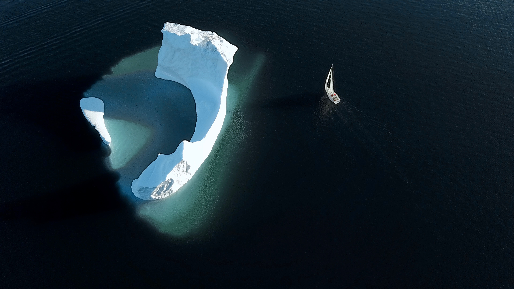
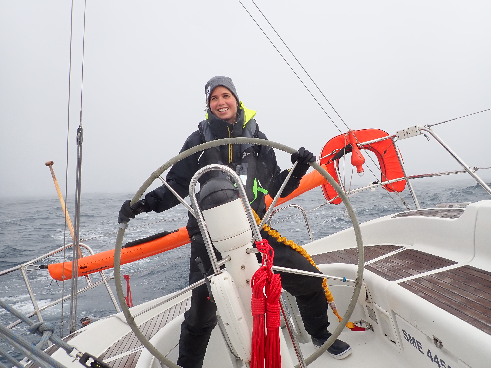

VAIMITI EVENTS
L'histoire du PNO
Le passage du Nord-Ouest se situe entre le détroit de Bering et la Mer de Baffin. Il a été lieu de grandes expéditions, en 1845 deux navires quittent l'Angleterre : L'Erebus et le Terror, avec à leur tête Sir John Franklin qui espérait ouvrir une grande route commerciale. De nombreuses expéditions pour secourir ces hommes ont été lancé, ce qui permettra par la même occasion de ramener quelques cartographies des lieux. Malheureusement personne ne suivra à cette expédition. Le passage du Nord-Ouest a été franchi pour la première fois en 1906 par le Norvégien Roald Amundsen. Aucun bateau ne l'a encore franchi à la voile sans assistance et sans escale a ce jour.

Les cartes de glace

Naviguer à la voile
